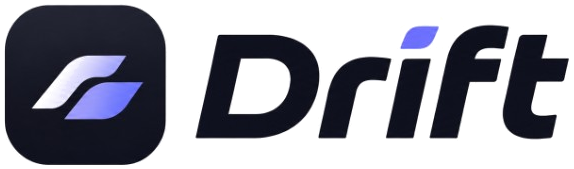

SSH 세션을 저장하고, Cursor 에이전트와 명령을 검토한 뒤 실행하세요.
최신 릴리스를 확인하는 중…
Drift
~/proj npm run dev
Local: http://127.0.0.1:5173
ssh · prod uptime
14:02 up 42 days
Agent
배포 전 상태를 확인했어요. 아래 명령을 실행할까요?
설치하고 키만 넣으면 시작할 수 있습니다.